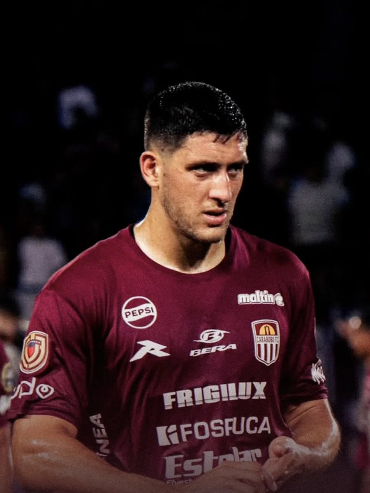
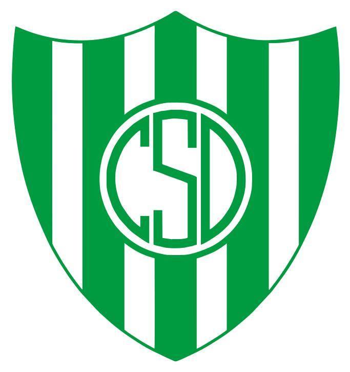
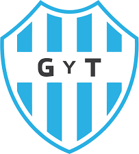
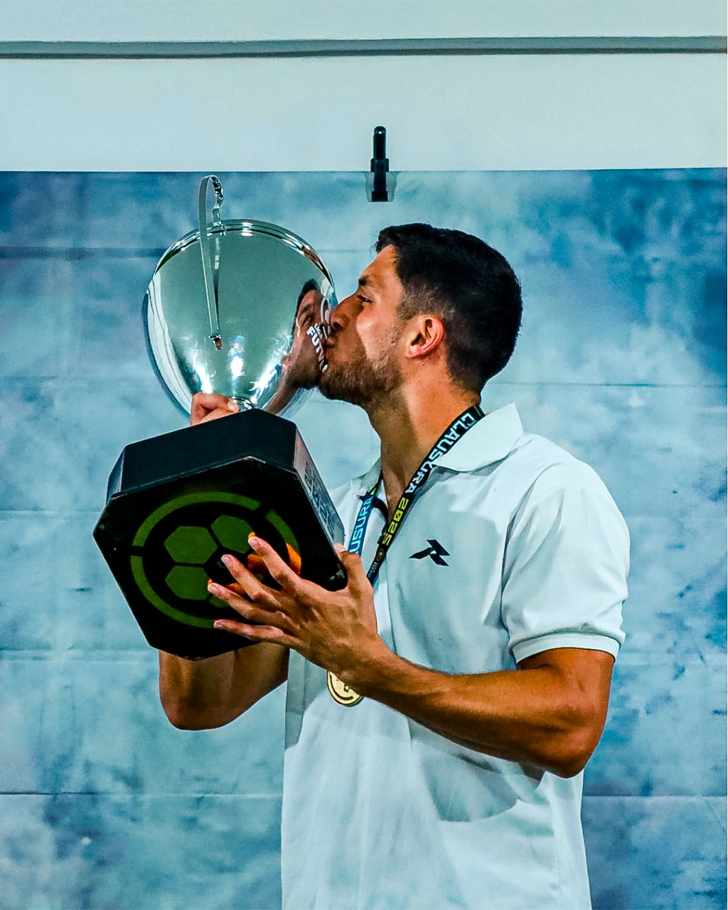
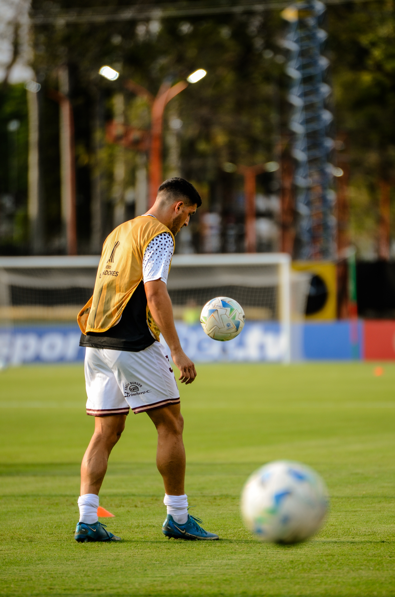
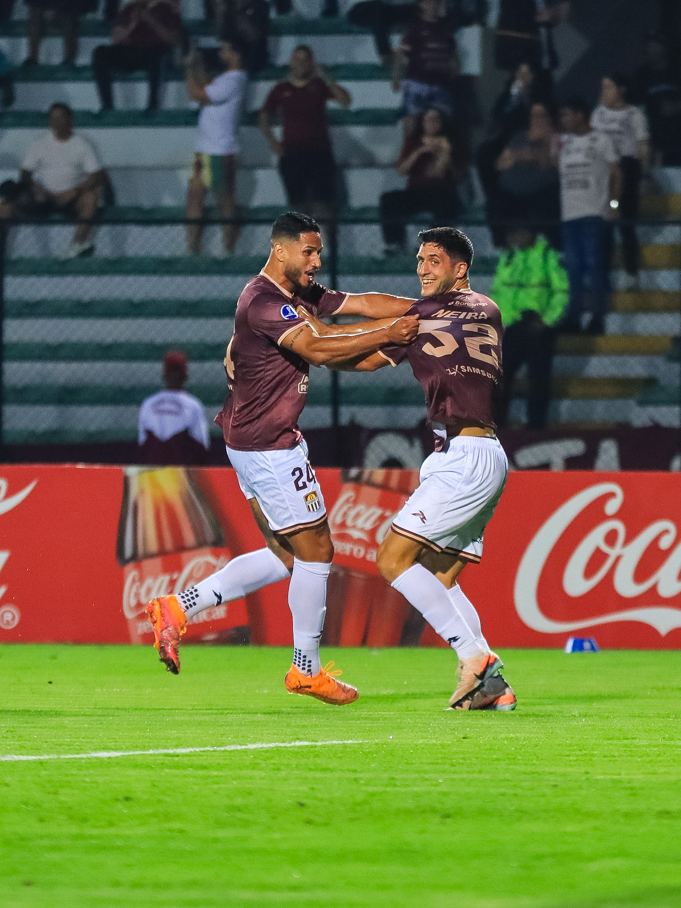
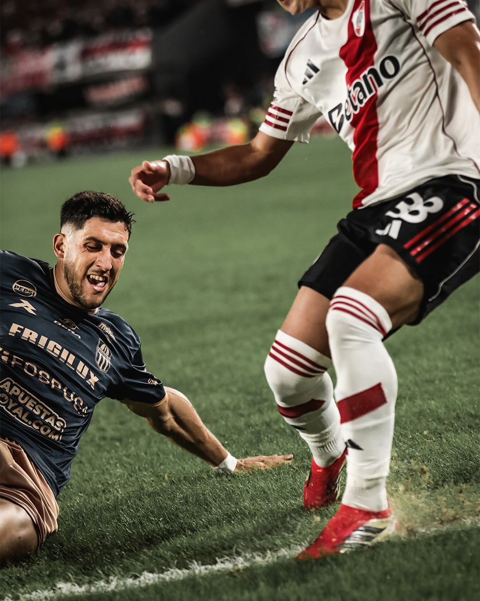

FICHA
- NACIONALIDAD
- Argentina
- NACIMIENTO
- 3 de febrero de 2001
- EDAD
- 25
- ALTURA
- 1,88 m
- PIE HÁBIL
- Derecho
- POSICIÓN
- Defensor central
- CLUB
- Carabobo FC
- CONTRATO
- Hasta diciembre de 2026
TÁCTICA
CLIPS DE DESEMPEÑO

EZEQUIEL NEIRA —
Atributos
- Anticipación — 0,3 intercepciones por partido (Copa Sudamericana). “Capacidad para leer el desarrollo de la jugada, anticiparse al rival y cortar acciones antes de que generen peligro.”
- Juego aéreo — 83% de duelos aéreos ganados (Copa Sudamericana). “Capacidad para imponerse en disputas aéreas mediante posicionamiento, timing y fortaleza física.”
- Pases — 84% de precisión de pase (Liga FUTVE). “Seguridad y precisión en la circulación desde la última línea, especialmente en situaciones de construcción en campo propio.”
- 1 vs 1 defensivo — 0,0 veces regateado por partido (Copa Sudamericana). “Capacidad para defender directamente al rival, sostener el duelo individual y evitar ser superado en situaciones de uno contra uno.”
- Pases progresivos. “Capacidad para avanzar el juego desde la última línea mediante pases que superan líneas de presión y permiten al equipo progresar en el campo.”
CARRERA
-
INSTITUTO
FORMATIVAS
-

DESAMPARADOS
-
SOL DE AMÉRICA
-

GIMNASIA Y TIRO
-
CARABOBO FC
ACTUAL
GALERÍA
-

Campeón Clausura 2025 -

Libertadores 2026 -

Gol vs Bragantino -

Vs River -
Campeón Apertura
Campeón Clausura 2025 Libertadores 2026 Gol vs Bragantino Vs River Campeón Apertura
NOTICIAS
VERIFICACIÓN EXTERNA
LOS DATOS, VERIFICABLES DONDE QUIERAS.
¿QUERÉS SABER MÁS DE EZEQUIEL NEIRA?
Escribinos y te contamos.
Hablar con HRK Sports (abre WhatsApp en una pestaña nueva)